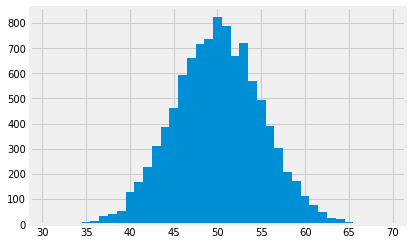

3.10 Iteration with For loops
# Load the Numpy package, and rename to "np"
import numpy as np
Iteration
It is often the case in programming – especially when dealing with randomness – that we want to repeat a process multiple times.
We know the numpy function random.randint claims to choose randomly
between the integers in the range we specify.
We have been choosing randomly between 0 and 1 with:
coin = np.random.randint(0, 2)
coin
0
We might want to check this really does in fact pick 0 or 1 with about the same probability. To do that, we could start by running the following cell many times to see if we get roughly equal numbers of 0s and 1s.
np.random.randint(0, 2)
0
We might want to re-run code with slightly different input or other slightly different behavior. We could copy-paste the code multiple times, but that’s tedious and prone to typos, and if we wanted to do it a thousand times or a million times, forget it.
A more automated solution is to use a for statement to loop over the
contents of a sequence. This is called iteration. A for statement begins
with the word for, followed by a name we want to give each item in the
sequence, followed by the word in, and ending with an expression that
evaluates to a sequence. The indented body of the for statement is executed
once for each item in that sequence.
for i in np.arange(3):
print(i)
0
1
2
The idea behind a for loop
The for loop takes a sequence of things (in our case, the sequence 0, 1, 2), and, for each element in the sequence, it does some task. The task is the indented part of the for loop, also called the body of the for loop.
This is a common pattern where we take a series of things, and perform the same steps on each. For example, imagine a librarian describing the sequence of steps that he goes through, in issuing a stack of books. He might say something like:
Get the stack of books to issue from the reader
Put stack of books to issue on my left
For each *book* in [the stack of books on my left]:
Open *book* to first page
Stamp first page of *book*
Close *book*
Put *book* onto stack on my right
(Now I have finished processing all the books)
Hand stack of books on my right to reader
Imagine a passport control officer describing their procedure at work:
Sign into computer at immigration station
Open immigration station
For each *person* of [the people in the immigration line]:
Ask *person* for their passport.
Check passport photo against face of *person*.
Scan passport to check against database.
Return passport to *person*.
Allow *person* through to customs.
(Now I have finished processing all the people in the line)
Close immigration station
Sign out of computer at immigration station
In either case, we take a sequence of things (books, people), and for each element in that sequence (each book, each person) we perform a task (issuing the book, checking the person’s passport). We have indented the steps of the task that we perform for each (book, person); this is the task definition. In the for loop, the task definition is also called the body of the for loop.
In the loops above, we did something with each element in the sequence. For the first loop, the element is one book. The librarian opened, stamped, moved the book. In the second loop, the element is a person in the immigration line; the officer takes their passport and checks it, and then allows them through.
This is not always the case - sometimes we just want to repeat some action a set amount of times. For example, when you go on a flight, you may see a member of the cabin crew going through the cabin, clicking a clicker once for each passenger. This is to count the number of passengers. That loop might be:
Get clicker from equipment cupboard
For each *passenger* of the [passengers in the aircraft]:
Press the clicker
(Now I have finished counting the passengers)
Report number on clicker to ground staff
Put clicker back in cuboard
Notice that the body of the loop is “Press the clicker”, but that doesn’t involve the particular passenger. The loop, here, is just a way of repeating the same action multiple times.
Unrolling the loop
Here is the actual Python for loop.
for i in np.arange(3):
print(i)
0
1
2
We can read that as:
For each value in the sequence "np.arange(3)":
Put the value into the variable "i"
Execute the statement "print(i)"
iis the loop variable;np.arange(3)is the sequence;print(i)is the body of the loop.
It is instructive to imagine code that exactly replicates the for statement
without the for statement. (This is called unrolling the loop.) A for
statement simply replicates the code inside it, but before each iteration, it
assigns a new value from the given sequence to the name we chose. For
example, here is an unrolled version of the loop above:
i = 0
print(i)
i = 1
print(i)
i = 2
print(i)
0
1
2
Notice that the name i is arbitrary, just like any name we assign with =.
For example, the following for loop works in just the same way as the for
loop above:
for my_variable in np.arange(3):
print(my_variable)
0
1
2
my_variableis the loop variable;np.arange(3)is the sequence;print(my_variable)is the body of the loop.
As in the examples above, the body of the loop need not use the loop variable. We might just use the loop to repeat something several times. Here is an old-school comedy policeman:
for i in np.arange(3):
print("Hello")
Hello
Hello
Hello
iis the loop variable;np.arange(3)is the sequence;print("Hello")is the body of the loop. It does not use the loop variable.
In the next example, we use a for statement in a more realistic way: we
print the results of five random integers:
for i in np.arange(5):
print(np.random.randint(0, 2))
1
1
1
0
1
In this case, we simply perform exactly the same (random) action several
times, so the code inside our for statement does not actually refer to the
variable i.
Example: Counting the Number of Heads
We can now simulate five tosses of a coin and place the results into an array. We will start by creating an empty array and then appending the result of each toss.
# An empty array.
tosses = np.array([])
for i in np.arange(5):
tosses = np.append(tosses, np.random.randint(0, 2))
tosses
array([1., 1., 1., 1., 1.])
Let us rewrite the cell with the for statement unrolled:
# An empty array.
tosses = np.array([])
i = 0
tosses = np.append(tosses, np.random.randint(0, 2))
i = 1
tosses = np.append(tosses, np.random.randint(0, 2))
i = 2
tosses = np.append(tosses, np.random.randint(0, 2))
i = 3
tosses = np.append(tosses, np.random.randint(0, 2))
i = 4
tosses = np.append(tosses, np.random.randint(0, 2))
tosses
array([0., 1., 0., 1., 1.])
Now we have an array, we can use np.sum to count the
number of heads in the five tosses.
np.sum(tosses)
3.0
Iteration is a powerful technique. For example, by running exactly the same code for 1000 tosses instead of 5, we can count the number of heads in 1000 tosses.
# An empty array.
tosses = np.array([])
for i in np.arange(1000):
tosses = np.append(tosses, np.random.randint(0, 2))
tosses
array([1., 1., 1., 1., 0., 1., 1., 0., 0., 1., 0., 1., 1., 1., 1., 1., 1.,
1., 1., 0., 1., 1., 1., 1., 0., 0., 1., 0., 0., 1., 1., 1., 1., 0.,
1., 0., 1., 1., 1., 1., 0., 1., 0., 0., 1., 0., 1., 1., 0., 1., 0.,
1., 0., 0., 0., 0., 0., 1., 0., 0., 1., 0., 0., 0., 0., 1., 1., 0.,
0., 1., 0., 1., 0., 1., 1., 0., 0., 0., 1., 1., 1., 1., 0., 1., 0.,
0., 0., 1., 0., 1., 0., 0., 1., 1., 0., 0., 1., 0., 1., 1., 0., 1.,
0., 1., 0., 0., 0., 1., 0., 1., 0., 0., 0., 1., 1., 0., 0., 1., 0.,
1., 0., 0., 0., 0., 1., 0., 0., 0., 1., 0., 1., 1., 1., 1., 1., 0.,
1., 0., 0., 1., 0., 1., 0., 0., 1., 0., 1., 1., 1., 0., 1., 1., 1.,
1., 1., 1., 0., 0., 0., 0., 1., 1., 1., 0., 0., 1., 1., 1., 0., 1.,
1., 0., 0., 1., 1., 1., 0., 0., 0., 1., 1., 0., 1., 1., 1., 1., 0.,
1., 1., 0., 1., 0., 1., 1., 0., 1., 0., 1., 0., 1., 0., 1., 0., 1.,
1., 1., 0., 1., 1., 1., 0., 0., 0., 0., 0., 1., 1., 0., 0., 1., 0.,
0., 1., 1., 1., 0., 1., 1., 0., 0., 1., 0., 0., 1., 1., 0., 1., 1.,
1., 1., 1., 0., 0., 0., 1., 1., 1., 0., 1., 1., 1., 1., 0., 0., 1.,
0., 0., 0., 1., 0., 0., 1., 0., 1., 1., 1., 0., 1., 1., 0., 0., 1.,
0., 1., 0., 1., 0., 0., 1., 0., 1., 0., 0., 1., 0., 1., 1., 0., 1.,
1., 1., 0., 1., 0., 0., 1., 1., 1., 0., 1., 0., 0., 0., 0., 0., 1.,
0., 1., 1., 1., 0., 1., 1., 0., 1., 0., 0., 1., 1., 1., 1., 1., 0.,
1., 0., 0., 0., 0., 1., 0., 0., 0., 1., 0., 1., 1., 1., 1., 1., 1.,
1., 0., 0., 0., 0., 1., 1., 0., 0., 1., 1., 1., 1., 1., 1., 0., 1.,
0., 0., 1., 0., 0., 0., 0., 1., 0., 0., 1., 1., 1., 0., 0., 1., 0.,
1., 0., 0., 0., 0., 1., 1., 0., 1., 0., 1., 1., 1., 1., 0., 0., 0.,
0., 0., 1., 0., 1., 0., 0., 1., 1., 1., 0., 1., 0., 1., 0., 1., 0.,
1., 1., 1., 1., 0., 1., 1., 0., 1., 0., 1., 1., 0., 0., 0., 1., 0.,
1., 0., 1., 1., 1., 1., 0., 1., 1., 1., 0., 1., 0., 0., 0., 1., 0.,
0., 0., 1., 0., 1., 1., 1., 1., 0., 1., 1., 1., 1., 1., 1., 0., 1.,
1., 0., 0., 0., 0., 1., 0., 0., 1., 0., 1., 0., 1., 1., 1., 0., 0.,
0., 1., 0., 1., 0., 0., 1., 1., 1., 1., 1., 0., 0., 0., 1., 1., 0.,
0., 0., 1., 0., 0., 1., 1., 0., 1., 0., 0., 1., 1., 1., 1., 1., 1.,
1., 1., 1., 0., 0., 1., 1., 1., 1., 1., 1., 1., 1., 0., 0., 1., 1.,
1., 0., 1., 0., 1., 1., 1., 1., 1., 1., 0., 0., 1., 0., 0., 1., 0.,
0., 1., 1., 1., 0., 1., 0., 1., 0., 0., 1., 1., 1., 1., 1., 0., 1.,
0., 1., 1., 1., 0., 0., 1., 1., 0., 0., 0., 0., 1., 1., 0., 0., 1.,
1., 0., 1., 1., 1., 0., 0., 0., 1., 0., 1., 1., 1., 0., 1., 1., 0.,
0., 1., 1., 0., 0., 0., 1., 1., 1., 0., 0., 1., 0., 0., 0., 1., 0.,
1., 1., 0., 1., 1., 0., 1., 1., 0., 0., 1., 0., 1., 0., 0., 0., 0.,
1., 1., 0., 0., 1., 1., 1., 0., 0., 1., 0., 0., 1., 0., 0., 0., 0.,
0., 1., 0., 1., 1., 1., 0., 1., 0., 1., 0., 0., 0., 0., 0., 1., 1.,
0., 1., 0., 1., 1., 1., 0., 0., 1., 1., 1., 1., 1., 1., 1., 1., 1.,
1., 0., 0., 0., 0., 1., 1., 0., 1., 0., 1., 1., 0., 1., 1., 1., 1.,
0., 1., 1., 1., 0., 0., 1., 1., 1., 0., 0., 0., 0., 0., 1., 0., 1.,
0., 0., 1., 1., 0., 0., 0., 0., 1., 0., 0., 0., 1., 0., 0., 1., 1.,
0., 0., 0., 1., 0., 1., 0., 1., 0., 0., 0., 1., 1., 1., 0., 1., 0.,
1., 0., 0., 0., 1., 1., 0., 0., 0., 0., 1., 1., 0., 0., 0., 0., 1.,
1., 0., 0., 1., 0., 0., 1., 1., 1., 1., 0., 0., 1., 0., 0., 0., 0.,
1., 0., 0., 1., 1., 0., 0., 1., 1., 1., 1., 0., 1., 0., 1., 0., 0.,
1., 1., 1., 1., 1., 0., 0., 1., 0., 1., 1., 1., 0., 0., 1., 0., 0.,
0., 1., 0., 0., 1., 0., 1., 0., 0., 1., 0., 0., 1., 0., 0., 0., 1.,
0., 0., 1., 0., 1., 0., 1., 0., 0., 0., 0., 0., 0., 1., 0., 1., 0.,
0., 0., 0., 1., 0., 1., 0., 1., 1., 0., 0., 1., 1., 0., 0., 0., 0.,
0., 0., 1., 1., 1., 1., 0., 1., 1., 1., 1., 1., 1., 0., 1., 1., 1.,
1., 1., 1., 1., 0., 1., 1., 0., 1., 1., 0., 0., 0., 1., 0., 0., 1.,
0., 0., 0., 1., 0., 0., 1., 1., 0., 0., 0., 1., 1., 1., 0., 0., 1.,
1., 0., 1., 0., 1., 0., 0., 1., 1., 1., 0., 0., 0., 1., 0., 0., 1.,
0., 1., 0., 0., 0., 1., 0., 0., 1., 0., 0., 1., 0., 1., 0., 0., 0.,
1., 1., 1., 1., 0., 1., 1., 1., 0., 1., 0., 1., 0., 1., 0., 0., 1.,
0., 1., 0., 1., 0., 1., 0., 1., 1., 0., 1., 1., 0., 0., 1., 0., 0.,
0., 0., 0., 1., 1., 1., 1., 0., 1., 0., 1., 1., 0., 0.])
Example: Number of Heads in 100 Tosses
It is natural to expect that in 100 tosses of a coin, there will be 50 heads, give or take a few.
But how many is “a few”? What’s the chance of getting exactly 50 heads? Questions like these matter in data science not only because they are about interesting aspects of randomness, but also because they can be used in analyzing experiments where assignments to treatment and control groups are decided by the toss of a coin.
In this example we will simulate 10,000 repetitions of the following experiment:
- Toss a coin 100 times and record the number of heads.
The histogram of our results will give us some insight into how many heads are likely.
As y’all have already seen, np.randint can take a size argument, to return an array of random integers:
np.random.randint(0, 2, size=10)
array([1, 1, 0, 1, 1, 0, 1, 1, 0, 1])
Now let’s study 100 tosses. We will start by creating an empty array
called heads. Then, in each of the 10,000 repetitions, we will toss
a coin 100 times, count the number of heads, and append it to heads.
N = 10000
head_counts = np.array([])
for i in np.arange(N):
tosses = np.random.randint(0, 2, size=100)
n_heads = np.sum(tosses)
head_counts = np.append(head_counts, n_heads)
head_counts
array([43., 41., 57., ..., 53., 44., 52.])
Here is a histogram of the data, with bins of width 1 centered at each value of the number of heads.
This is the first time we have used plotting, so please accept this piece of code to initialize the plotting first:
# Please don't worry about this bit of code for now.
# It sets up plotting in the notebook.
import matplotlib.pyplot as plt
%matplotlib inline
# Fancy plots
plt.style.use('fivethirtyeight')
Now we do the histogram:
# Again, don't worry about the details here.
plt.hist(head_counts, bins=np.arange(30.5, 69.6, 1));

Not surprisingly, the histogram looks roughly symmetric around 50 heads. The height of the bar at 50 is about 8% per unit. Since each bin is 1 unit wide, this is the same as saying that about 8% of the repetitions produced exactly 50 heads. That’s not a huge percent, but it’s the largest compared to the percent at every other number of heads.
The histogram also shows that in almost all of the repetitions, the number of heads in 100 tosses was somewhere between 35 and 65. Indeed, the bulk of the repetitions produced numbers of heads in the range 45 to 55.
While in theory it is possible that the number of heads can be anywhere between 0 and 100, the simulation shows that the range of probable values is much smaller.
This is an instance of a more general phenomenon about the variability in coin tossing, as we will see later in the course.
Now see the for loop exercises.